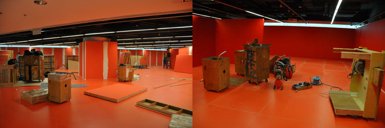
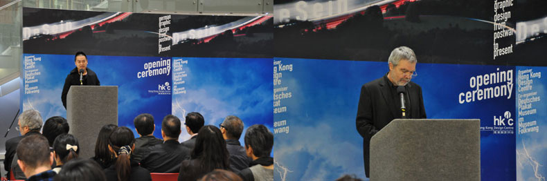

“De Sein: ���疳岬浆F代德��平面�O��”�@��展�[，展示第二次世界大�鹬两竦牡���平面�O���l展，�暮��蟆���籍、文字及企�I形象�O��等����方面，�碚故镜���在�v��冷�稹���倒和����德���y一後至今的平面�O���v程。��展�[部分展品�碜缘���海�蟛┪镳^Volkwang博物�^的收藏，其�N作品皆�碜栽O����本人的支持。
The De Sein exhibition reveals the development of German graphic design from postwar to present. The exhibition includes posters, publications, type designs and corporate identities, generously supplied by 47 designers with several on loan from the German Poster Museum at Museum Folkwang. They represent the history of graphic design from World War II, the Cold War, the fall of the Berlin Wall as well as the reunification of East and West Germany.
－－－－－－－－－－－－－－－－－－－－－－－－－－－－－－－－－－－－－－－－－－－－－－－－－－－The exhibition “De Sein - German Graphic Design from Postwar to Present”
is held between 28th November 2011 to 28th December 2011 in InnoCentre.
“De Sein: ���疳岬浆F代德��平面�O��”
於11月28日至12月28日在香港��新中心展出
Opening Ceremony: 6-7:00pm, 30th November, 2011
Guests of Honour: Rene Gorhnert, Dr. Christian Bauer
�_幕式: 2011年11月30日下午6－7�c，香港��新中心
�_幕式嘉�e演�v：Rene Gorhnert, Dr. Christian Bauer
Venue地�c
InnoCentre, 72 Tat Chee Avenue,
Kowloon Tong, Hong Kong
Curator策展人
Jianping He何��平
Co-curators��合策展人
Amy Chow, Freeman Lau, René Grohnert
周婉美，�⑿】担�René Grohnert
Organiser主�k
Hong Kong Design Centre
香港�O��中心
www.hkdesigncentre.org
Co-organiser�f�k
Deutsches Plakat Museum im Museum Folkwang
德��Folkwang博物�^之海�蟛┪镳^
Catalogue published in 2011 by
hesign (Publishing & Design)
�l行�D��一�杂�hesign出版
Editor主��
Jianping He何��平
Design & Layout�O��
hesign Berlin
Text文字
Rene Grohnart p.7-16,
Christian Bauer p.17-22,
Jianping He何��平 p.23-25,
Amy Chow周婉美 p.26-27,
Freeman Lau�⑿】� p.28-30

